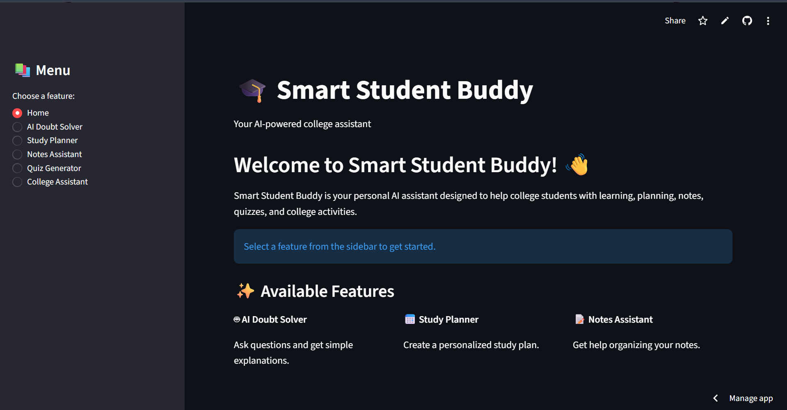
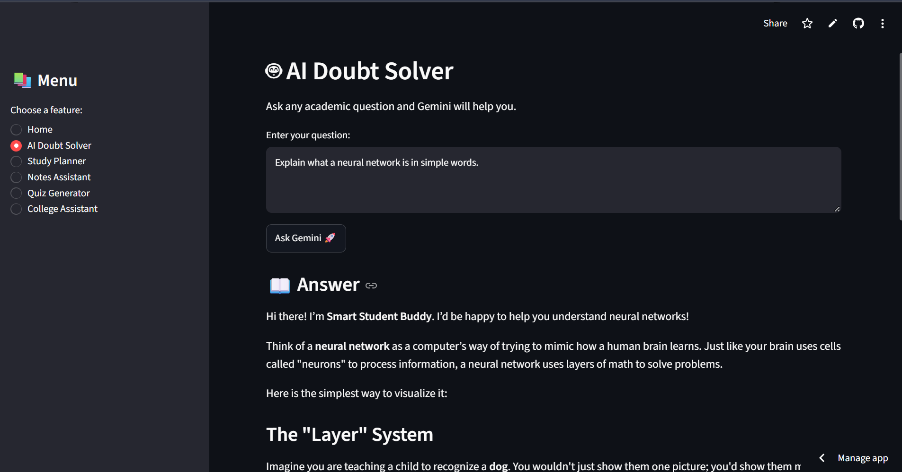
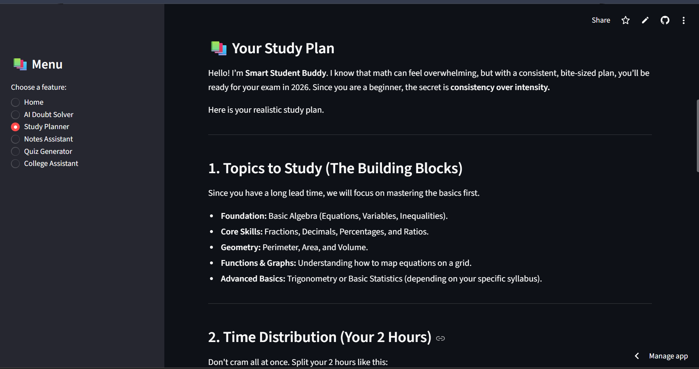
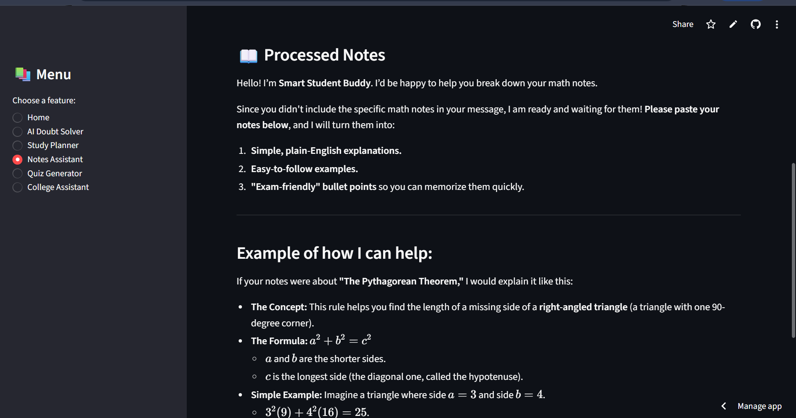
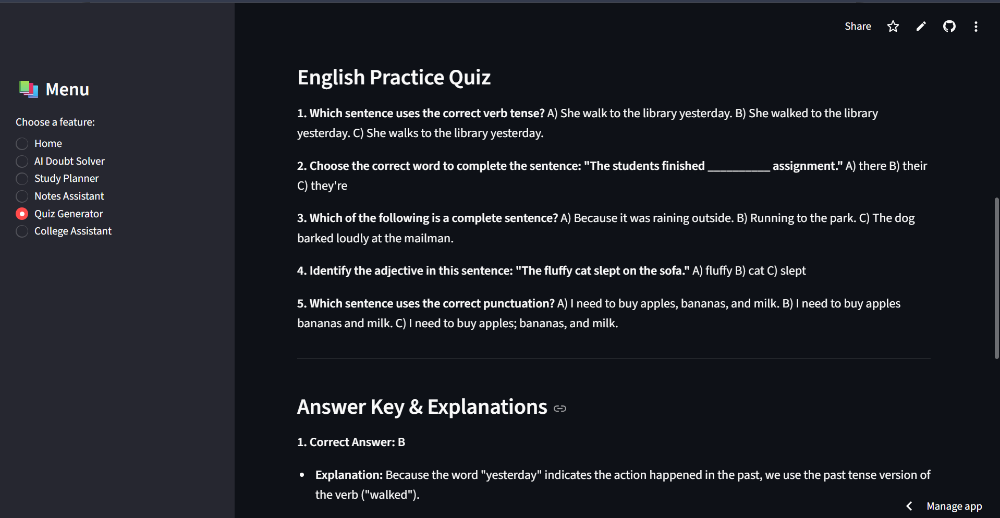
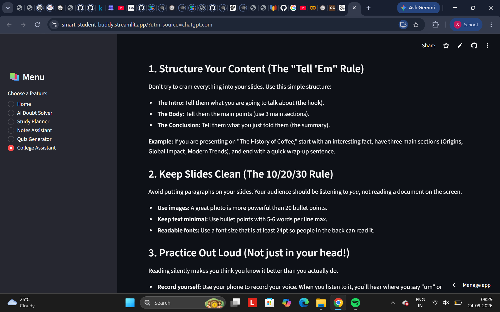

PROJECT 001 / AI APPLICATION
Smart Student Buddy
AI-powered student assistant with AI Doubt Solver, Study Planner, Notes Assistant, Quiz Generator and College Assistant.
DNA
Academic Assistant
Multiple student workflows inside one application.
STATUS
● DEPLOYED
Public Streamlit demo.
STUDENT→STREAMLIT UI→AI SERVICE→GEMINI→RESPONSE





